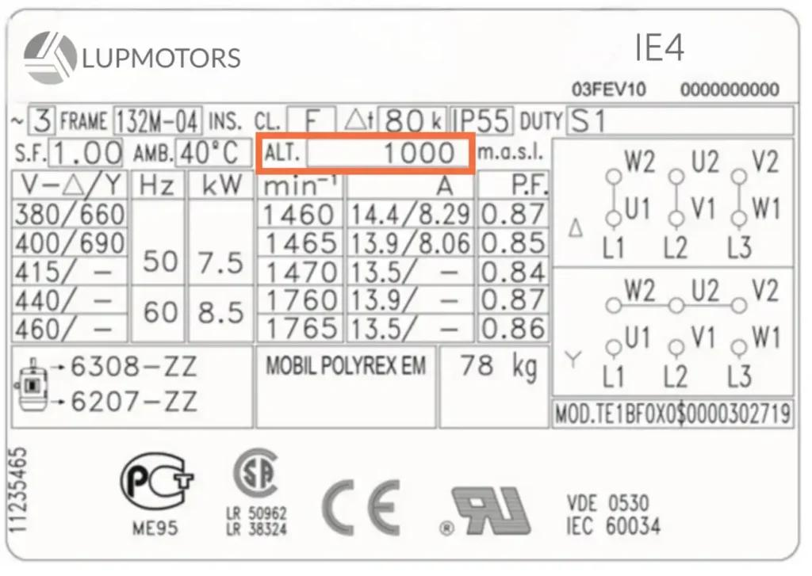
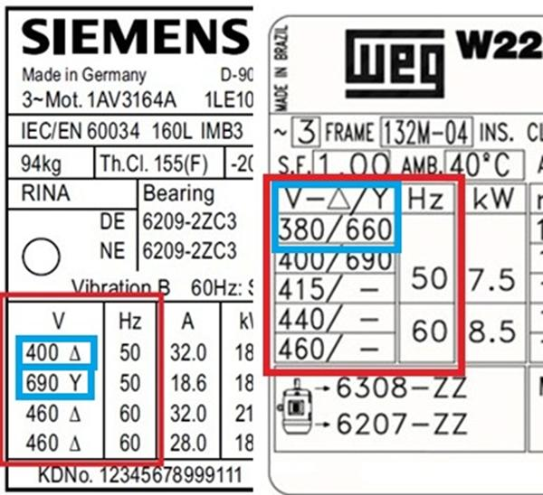
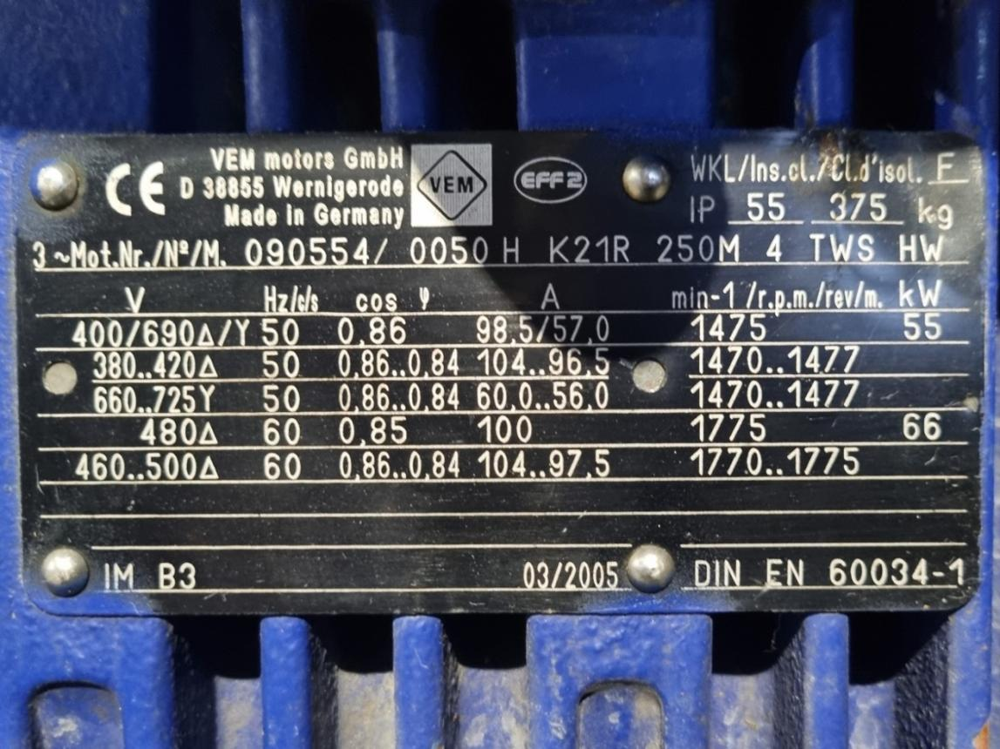

Study path: 02_PLAN_WISE_2026\02_INDUSTRY3_0\02_Auto_Tech\04_VFD\04_Parameterization\01_Motor_Data
1. What is motor-data parameterization?
Motor-data parameterization is the process of entering the motor's rated information into a variable frequency drive (VFD) so that the drive can control the motor and configure relevant protection functions correctly.
The previous topic covered what motor parameters mean. This topic focuses on how those values are selected, entered, verified, and commissioned in the drive.
Typical motor-data parameters include:
- Rated motor power.
- Rated motor voltage.
- Rated motor current.
- Rated motor frequency.
- Rated motor speed.
- Rated power factor.
- Rated efficiency, where required.
- Motor-control mode and motor identification settings.
The exact parameter names, numbers, and required fields differ between manufacturers and drive models. Never assume that a parameter number from one drive applies to another.
2. Where motor data fits into a VFD configuration
Motor Nameplate
|
v
Verify Motor Connection
|
v
Verify VFD Rating and Compatibility
|
v
Enter Motor Nameplate Data
|
v
Select Motor-Control Method
|
v
Perform Motor Identification if Required
|
v
Configure Limits and Protection
|
v
Test and Verify Under Load
Motor-data entry is only one part of commissioning. The drive must also have appropriate run commands, speed references, acceleration and deceleration settings, current limits, protection settings, and safety arrangements.
A motor that rotates after parameter entry is not automatically configured correctly. It could still have incorrect overload protection, poor low-speed torque, or an unsuitable operating range.
3. Step 1: Collect the motor nameplate data



7
Before entering parameters, record the motor's actual nameplate values.
Use this example throughout the topic. The values are illustrative, not a universal motor specification.
| Nameplate item | Example value |
|---|---|
| Rated output power | 7.5 kW |
| Rated voltage | 400 V Δ / 690 V Y |
| Rated current | 15.2 A / 8.8 A |
| Rated frequency | 50 Hz |
| Rated speed | 1465 rpm |
| Power factor | 0.82 |
| Efficiency | 89.5% |
| Duty | S1 |
| Insulation class | F |
Record the complete voltage and current pairs. Do not copy one number from the nameplate and ignore the connection associated with it.
4. Step 2: Verify the motor connection
Motor connection determines which nameplate voltage and current values apply.
For the example motor:
- 400 V line voltage with delta connection: use the applicable 400 V delta-rated data.
- 690 V line voltage with star connection: use the applicable 690 V star-rated data.
Assuming the motor is intended to operate from a 400 V-class VFD output at its rated point, the motor would normally be connected in delta for this example, provided the motor terminal diagram and actual installation confirm that arrangement.
The applicable motor-data entries would therefore use:
- Rated voltage: 400 V.
- Rated current: 15.2 A.
- Rated frequency: 50 Hz.
- Rated speed: 1465 rpm.
Critical rule: A 400 V-class VFD does not mean every motor must be connected in delta. The actual motor nameplate, terminal links, intended operating point, and drive output capability determine the correct connection.
5. Step 3: Enter the motor data in the VFD
The following table maps common nameplate fields to their purpose in a drive.
| VFD parameter field | Value in the example | Purpose |
|---|---|---|
| Motor rated power | 7.5 kW | Defines rated motor output for applicable control functions |
| Motor rated voltage | 400 V | Defines the rated voltage reference |
| Motor rated current | 15.2 A | Supports applicable control calculations and thermal protection |
| Motor rated frequency | 50 Hz | Defines the rated frequency and base operating point |
| Motor rated speed | 1465 rpm | Supports speed and slip estimation in applicable control modes |
| Motor power factor | 0.82 | Used by some drive control models |
| Motor efficiency | 89.5% | Required by some drives or energy-related functions |
| Motor pole count | 4, if confirmed or required | Supports calculations where the drive uses pole count |
| Motor thermal data | Manufacturer-specific | Supports the configured motor protection model |
Some drives calculate values automatically, require fewer entries, or request additional data. Use the actual drive manual and on-screen parameter descriptions.
5.1 Motor rated power
Enter the rated output power from the motor nameplate.
If the drive requests kW, enter the kW value. If it requests horsepower, use the appropriate conversion and confirm the drive's units.
Do not enter the combined power of several motors into a single-motor configuration unless the drive and application are specifically designed for that arrangement.
5.2 Motor rated voltage
Enter the rated voltage corresponding to the motor's actual connection and intended operating point.
An incorrect voltage entry can affect the drive's voltage-frequency relationship and motor-flux calculations.
5.3 Motor rated current
Enter the rated line current corresponding to the selected voltage and connection.
For the example, 15.2 A is the applicable current for the 400 V delta arrangement.
Do not enter the VFD's maximum output current in place of the motor's rated current. The drive's current rating describes the drive; the motor's rated current describes the motor.
5.4 Motor rated frequency
Enter the nameplate frequency, which is 50 Hz in the example.
This value helps establish the motor's rated operating point. It does not automatically mean that the drive's maximum permitted output frequency should be set to 50 Hz in every application.
The maximum frequency and any operation above base frequency must be configured according to the motor, driven equipment, mechanical limits, and drive manufacturer's instructions.
5.5 Motor rated speed
Enter the rated shaft speed, 1465 rpm in the example, if the drive requests it.
Do not substitute the 1500 rpm synchronous speed of a four-pole motor at 50 Hz.
The difference reflects induction-motor slip under the specified rated operating conditions.
5.6 Power factor and efficiency
Enter these values only when the drive's configuration requires them.
Use the motor nameplate or manufacturer data. Do not estimate them from the drive's power rating or copy values from a different motor.
Some drives derive or identify additional motor-model parameters during commissioning.
6. Step 4: Select the motor-control method
Motor-data settings interact with the selected control mode.
| Control method | General characteristics | Motor-data considerations |
|---|---|---|
| V/f control | Controls output voltage in relation to frequency | Basic operation may require fewer motor-model parameters |
| Sensorless vector control | Estimates motor behaviour without a shaft encoder | Accurate motor data is important for torque and speed estimation |
| Closed-loop vector control | Uses feedback, commonly from an encoder | Requires appropriate motor data and correct feedback configuration |
| Manufacturer-specific advanced modes | Vary by drive family | Follow the drive-specific commissioning procedure |
For a basic fan or pump, V/f control may be sufficient. For a conveyor requiring accurate low-speed torque or demanding acceleration, vector control may be appropriate if the motor and drive support it.
The control mode should be selected based on the machine's actual performance requirements, not because one mode sounds more sophisticated.
7. Step 5: Perform motor identification or autotuning if required
Some drives recommend or require motor identification for specific control modes.
Depending on the drive, identification may estimate motor characteristics such as resistance, inductance, or magnetizing current.
Two common categories are:
- Static identification: The motor is not intentionally rotated, although it may still be electrically energized.
- Rotating identification: The drive runs a prescribed motor test sequence.
The availability and behaviour of these functions vary by manufacturer.
Before starting autotuning:
- Read the drive's instructions for the selected identification mode.
- Confirm the motor connection and entered nameplate data.
- Check whether the motor must be uncoupled from the mechanical load.
- Confirm brakes, contactors, safety interlocks, and machine movement risks.
- Ensure the machine is in an approved condition for the test.
- Record the result and any identification fault.
For a conveyor motor connected to a gearbox or loaded mechanism, do not assume rotating autotuning is safe. Follow the manufacturer's requirements and the site's machine-safety procedure.
8. Step 6: Configure current limits and thermal protection
Motor-data entry does not replace the configuration of the drive's protection functions.
Relevant settings may include:
- Motor overload or thermal protection.
- Current limit.
- Torque limit.
- Maximum and minimum operating frequency.
- Motor cooling or low-speed derating considerations.
- External motor-temperature sensor configuration, if fitted.
- Motor thermal model and reset behaviour.
The exact settings depend on the drive, motor, load, and application.
Motor current versus drive current
Consider a motor rated at 15.2 A supplied by a VFD rated for a higher output current.
The motor-data entry should still reflect the applicable motor nameplate current. The drive's higher output capability does not increase the motor's rated current or thermal capability.
The protection configuration must reflect the motor and application. Do not increase limits merely to stop nuisance trips without investigating their cause.
Low-speed motor cooling
Many standard induction motors use a shaft-mounted fan. As motor speed falls, fan airflow also decreases.
A motor delivering substantial torque at low speed may therefore overheat even when the drive's output current appears reasonable.
Depending on the application, the solution may involve:
- Reducing the permitted continuous torque at low speed.
- Using independent forced cooling.
- Selecting an appropriately rated motor.
- Applying the motor and drive manufacturer's thermal guidance.
A VFD cannot make a motor's cooling limitations disappear through parameter entry. Physics remains stubbornly unimpressed by configuration menus.
9. Common motor-data errors and their symptoms
| Error | Possible symptom | First check |
|---|---|---|
| Wrong rated voltage | Poor torque, incorrect flux, abnormal current | Verify nameplate and motor connection |
| Wrong rated current | Incorrect overload protection or motor-model calculations | Verify the applicable nameplate line current |
| Wrong frequency | Incorrect base operating point or voltage-frequency relationship | Verify the motor's rated frequency |
| Synchronous speed entered instead of rated speed | Incorrect slip estimation in applicable modes | Use the rated shaft speed |
| Wrong power units | Incorrect scaling or model configuration | Confirm kW versus hp and the drive's units |
| Incorrect star/delta connection | Abnormal current or insufficient performance | Inspect the motor terminal links and connection diagram |
| Incorrect encoder data | Speed-feedback errors or incorrect speed indication | Verify encoder resolution and configuration |
| Autotuning performed in an unsuitable condition | Failed identification or unsafe machine movement | Review the procedure, coupling, and machine state |
| Thermal protection incorrectly configured | Premature trips or inadequate motor protection | Verify the motor thermal model and application requirements |
Not every error produces an immediate fault. Some appear only during acceleration, low-speed operation, or high mechanical load.
10. Commissioning example: Conveyor motor
Assume a conveyor has a 7.5 kW induction motor with the illustrative nameplate data given earlier.
The drive is replaced, and the new VFD must be configured.
Before starting
- Verify that the VFD's voltage, output-current rating, and overload capability are suitable.
- Record the motor nameplate data.
- Confirm the motor's actual connection.
- Verify the motor cable, protective earth, and relevant wiring.
- Confirm that the mechanical system can safely run during testing.
During configuration
Enter the motor data required by the specific drive, then select the intended control mode and perform identification if required.
Check that the run command and speed reference come from the intended source, such as the local control panel, HMI, or PLC.
During testing
Start with an approved, controlled test procedure.
Check:
- Motor direction.
- Actual and commanded speed.
- Motor current under relevant load conditions.
- Acceleration and deceleration behaviour.
- Abnormal noise or vibration.
- Motor and drive fault history.
- Thermal behaviour during the expected duty.
If the motor behaves abnormally, do not immediately compensate by increasing current limits or changing unrelated parameters. Verify the entered data, wiring, load, and fault evidence first.
After testing
Save or record the final parameter set, including the motor data, control mode, protection settings, and any manufacturer-approved changes. This creates a useful baseline for future maintenance and drive replacement.
11. Troubleshooting scenarios
Scenario A: Motor runs but develops poor torque
Check:
- Rated voltage and current.
- Motor terminal connection.
- Control mode.
- Motor identification status, if applicable.
- Current and torque limits.
- Mechanical load and gearbox condition.
Scenario B: Motor trips on overload
Check:
- Whether the actual motor current exceeds the expected value.
- Whether the rated motor current and thermal protection settings are correct.
- Whether the motor is mechanically overloaded.
- Whether the motor is operating at low speed with insufficient cooling.
- Whether the motor or cable has an electrical fault.
An overload trip is evidence of a detected condition, not proof that the motor-current parameter is wrong.
Scenario C: Speed estimation is inaccurate
Check:
- Rated motor speed.
- Rated frequency and pole count, where used.
- Selected control mode.
- Motor identification status.
- Encoder scaling, if feedback is used.
- Whether the displayed speed is estimated or measured.
Scenario D: Autotuning fails
Check:
- Whether all required motor data is valid.
- Whether the selected tuning method is supported.
- Whether the motor connection matches the configuration.
- Whether the motor is in the required mechanical condition.
- Whether the drive reports a specific identification fault.
Follow the exact drive manual rather than repeatedly starting the same failed procedure. Machines rarely become more cooperative through repetition alone.
12. Practical checklist
Use this checklist during drive replacement or initial commissioning.
Motor identification
- Record manufacturer, model, and nameplate ratings.
- Verify rated power, voltage, current, frequency, and speed.
- Record power factor and efficiency if required.
- Confirm the actual star/delta connection.
- Verify the motor's intended operating range and duty.
VFD configuration
- Verify drive voltage and output-current suitability.
- Enter the motor data in the correct units.
- Select the required motor-control mode.
- Perform motor identification if required and safe.
- Configure overload, current, torque, and frequency limits.
- Configure encoder or temperature-sensor data if applicable.
Testing and records
- Verify direction and speed.
- Check current and load response.
- Test acceleration and deceleration.
- Verify protection and fault behaviour.
- Record final parameters and test results.
- Save the approved parameter backup using the site's document-control procedure.
13. Interview questions and answers
Q1. What is motor-data parameterization?
Entering and verifying the motor's rated data in the VFD so the drive can control the motor and configure its relevant protection functions.
Q2. Why must the actual motor connection be checked first?
Because the applicable rated voltage and current depend on the motor's intended winding connection.
Q3. Why should motor rated current not be replaced with the VFD's maximum current?
The ratings describe different equipment. The motor's rated current and thermal capability remain independent of the drive's maximum output capability.
Q4. Why does vector control often need more accurate motor data than basic V/f control?
Vector control relies more heavily on a motor model to estimate and regulate flux, torque, and speed.
Q5. What is motor autotuning?
A drive procedure that identifies motor characteristics for the selected control method. The procedure may be static or rotating, depending on the drive.
Q6. Does successful autotuning prove that the complete installation is correct?
No. Wiring, motor connection, protection settings, machine mechanics, and operation under load must still be verified.
Q7. What should be checked when a motor trips on overload?
Actual current, motor-data entries, thermal settings, mechanical load, cooling, and possible motor or cable faults.
Q8. Why should the final parameter set be recorded?
It provides a baseline for maintenance, troubleshooting, drive replacement, and controlled restoration of the machine.
14. Practical exercises
Exercise 1: Create a motor-data sheet
Use a real motor nameplate and prepare a table containing:
- Nameplate value.
- VFD parameter name.
- Entered value and units.
- Reason for the entry.
- Verification method.
Keep nameplate data separate from application settings such as maximum frequency and acceleration time.
Exercise 2: Find a configuration error
A motor rated at 400 V delta, 15.2 A, 50 Hz, and 1465 rpm has been configured with a current value copied from a different motor.
Explain which symptoms could result and how the correct value should be verified.
Exercise 3: Prepare a drive-replacement procedure
Create a controlled procedure covering:
- Recording the old drive configuration.
- Collecting motor data.
- Verifying motor wiring.
- Entering the new drive's parameters.
- Checking protection and command sources.
- Performing identification if required.
- Testing under load.
- Saving the approved configuration.
Exercise 4: Separate motor data from application settings
Classify each item as primarily motor data or application/drive configuration:
- Rated motor voltage.
- Rated motor current.
- Rated motor speed.
- Maximum output frequency.
- Acceleration time.
- Deceleration time.
- Motor thermal protection.
- PLC run-command source.
Some drive settings interact with motor data, but their purpose is different. In particular, acceleration and deceleration times belong to the next topic.
15. Final mental model
Actual Motor Nameplate
|
v
Verify Motor Connection and VFD Compatibility
|
v
Enter Required Motor Data
|
v
Select Control Mode and Identification Method
|
v
Configure Limits and Protection
|
v
Test Direction, Speed, Current, Load and Faults
|
v
Record the Approved Configuration
Key takeaway: Accurate motor-data entry is the foundation of correct VFD configuration. It does not replace proper motor selection, electrical safety, protection settings, or functional commissioning.
Next topic in sequence
02_PLAN_WISE_2026\02_INDUSTRY3_0\02_Auto_Tech\04_VFD\04_Parameterization\02_Ramp_Times
02_Ramp_Times - Ramp times: Accel and decel
The next topic will cover acceleration and deceleration time, ramp profiles, current limits during acceleration, DC-bus overvoltage during deceleration, conveyor and machine-load behaviour, and practical methods for tuning ramps without causing trips or mechanical shock.